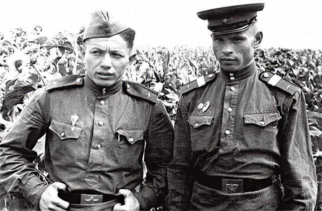

Влади́мир Никола́евич Войно́вич — российский прозаик, поэт и сценарист, драматург. Известен также как киноактёр, автор текстов песен и художник-живописец. Лауреат Государственной премии Российской Федерации.Википедия
Жизнь и необычайные приключения солдата Ивана Чонкина
Мне нравится этот фильм. Народ наш немного передохнул и взлетел, как в фильме, на на подручных средствах в годы перестройки. Хотелось бы, чтобы благополучно сел и наладил устойчивую, ценностно-ориентированную жизнь.
Борис Майоро.
На мой взгляд хороша и другая экранизация этого фильма Жизнь и необычайные приключения солдата Ивана Чонкина 2
Будем ждать продолжения экранизации этой трилогии.